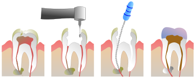
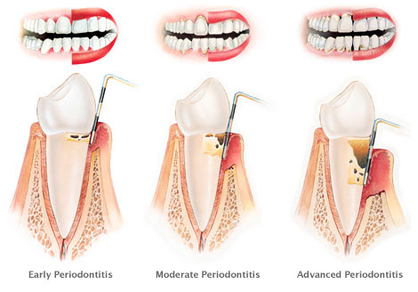
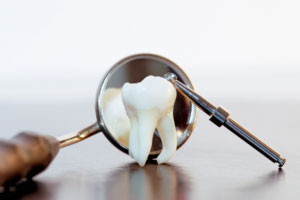
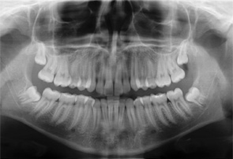

Other Dental Services in El Paso
Endodontics / Root canal therapy
Make no mistake -- root canals are nothing to be feared. The discomfort and stigma associated with root canal therapy is a thing of the past. In fact, root canals are incredibly helpful! That's because they can save teeth that would otherwise need to be extracted and replaced. And saving your natural teeth is always the best option. Thanks to modern dental technology, your root canal can be completed by in just one visit by our friendly, experienced doctors. And once the treatment is complete, you'll be relieved from the pain that caused you to need a root canal in the first place.

Gum therapy
While it's important for you to have healthy teeth and a beautiful smile, don't overlook your gums. Your gums and jawbone are the foundation supporting your smile. So it's more important than ever to maintain appropriate hygiene and regular dental visits, for healthy, robust gums. If you need treatment for gum disease, or cosmetic enhancement of your gums, our doctors can help you with the latest periodontal gum therapy. Ask us for additional information, or schedule your no-cost consultation.

Oral surgery / Extractions
There are a number of health reasons why a tooth must be extracted. Wisdom teeth, either protruded or impacted, may need to be removed if they compromise your other teeth. Teeth which cannot be saved with root canals must be extracted and replaced. And in general, any tooth with decay so severe should be removed and replaced with new porcelain restorations. Our doctors perform extractions daily, with anesthetic options available to keep you as comfortable as possible.

Dentures & Metal-Free Partials
Partials or partial dentures are other names for bridges. They restore missing or severely damaged teeth, literally creating a bridge from one natural tooth to the next. Thanks to 100% porcelain handcrafted and advances thanks to dental implants, metal free partials can virtually become complete replacement teeth, often in just a few visits.
Fixed Bridges
What makes fixed bridges unique compared to removable bridges? Dental implants. Using implants, our Picasso Smiles dentists can restore an entire section of your mouth with beautiful porcelain bridges that will last for decades. Plus, you'll be able to bite, chew, speak, and smile as if you had your natural teeth.You'll get used to your new restorations by receiving temporary bridges before you try on your permanent bridges fixed with dental implants.

Digital X-Rays
Picasso Smiles Dental is committed to the safety of all our patients, as well as our environment. That's why we use digital x-rays. This advanced form of x-ray imaging lets us capture x-rays of your teeth, gums, face, and jawbone without using any harmful chemicals. That means no harmful mess and 80 to 90 percent less radiation exposure to you and your family. In addition to safety, digital x-rays give our Picasso Smiles dentists enhanced visibility of your dental condition, thanks to instant development and the digital magnification abilities.
